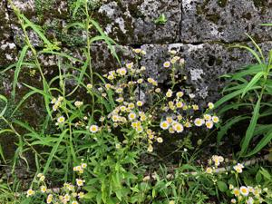
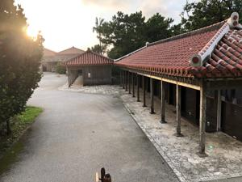

うるがいの話 ある日
最新: 韓国ドラマ時代劇ランキング
うるがいとは 前提知識です
カニの画像をクリックすると『うるがいの話』サイトを表示します
うるがい(ｳﾙｶﾞｲ urugai)とは、『もずくがに』の名前でとても大きくなります。
たながー（ﾀﾅｶﾞｰtanagaa）とは手長えびのことで、何種類かあり大きいのは車 エビぐらいになります。
ぶながー(bunagaa)とは、赤い髪の毛、赤い身体、そして身長は１ｍ２０ｃｍ ぐらい、川の蟹を食べているの目撃された。場所は沖縄県国頭郡大宜味村のと ある村僕の隣近所に住んでいる爺さんから、聞いた話です。
2021年08月29日 (日）
韓国ドラマ時代劇ランキング
15:33


韓国時代劇「トンイ」を衛星放送を録画で見ていたが、衛星放送は天気が悪く
映らなくなったり、録画のチョンボがあったりしていた。そのうち私はアマゾ
ンプライムで見れるかもと試しに見てみた。見れた、コマシャールなしで！、
ノーカットで、もっと早く気づけば良かった。それ以来、アマゾンプライムで
見ている。先週、「トンイ」の最終回をみた、その次はとネットのランキング
を参考にしようと韓国ドラマ時代劇ランキングを見た。１位「トンイ」、２位
「宮廷女官チャングムの誓い」とある。これって確かＮＨＫの衛星放送（２０
０４年～）していたのをみた記憶があるが・・・。どうせ、忘れてるしとアマ
ゾンプライムで見始めた、昨日で９回話、全く覚えていない、面白い。さすが
有料（コドモが費用は負担し、私は家族間として利用しているので無料だが）